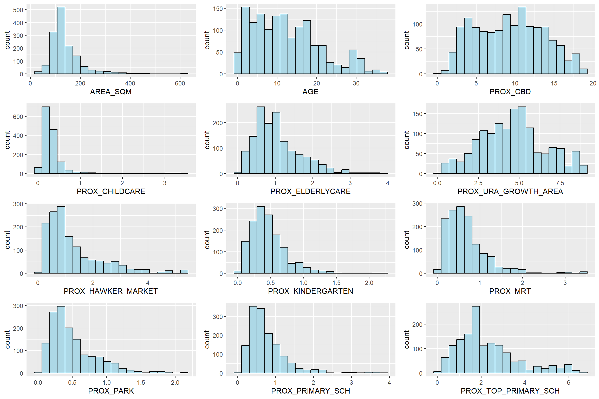
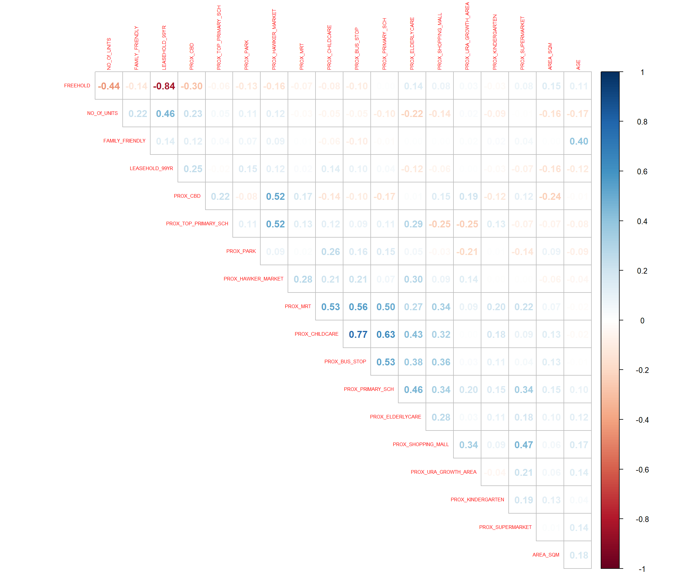
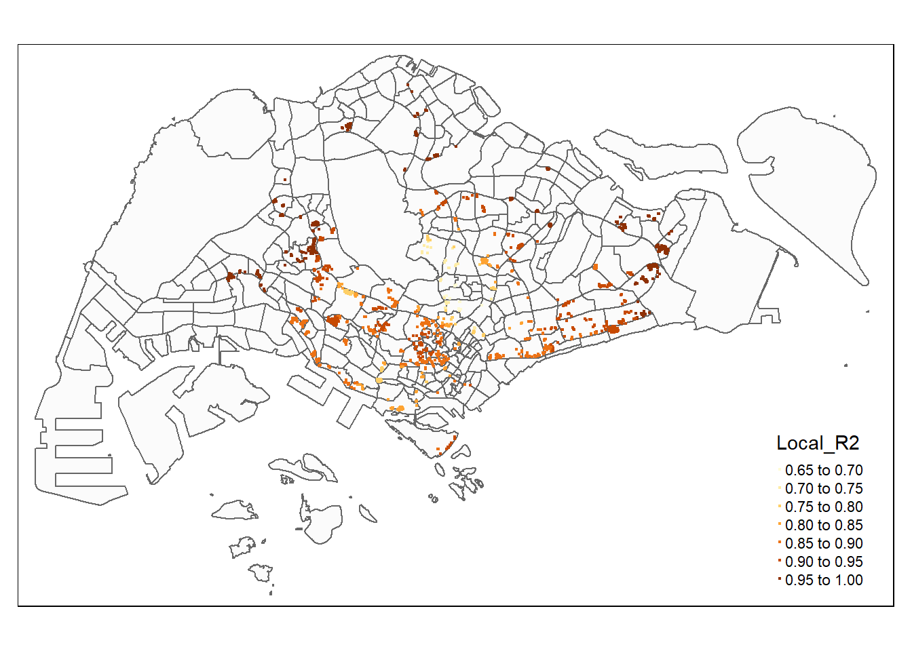
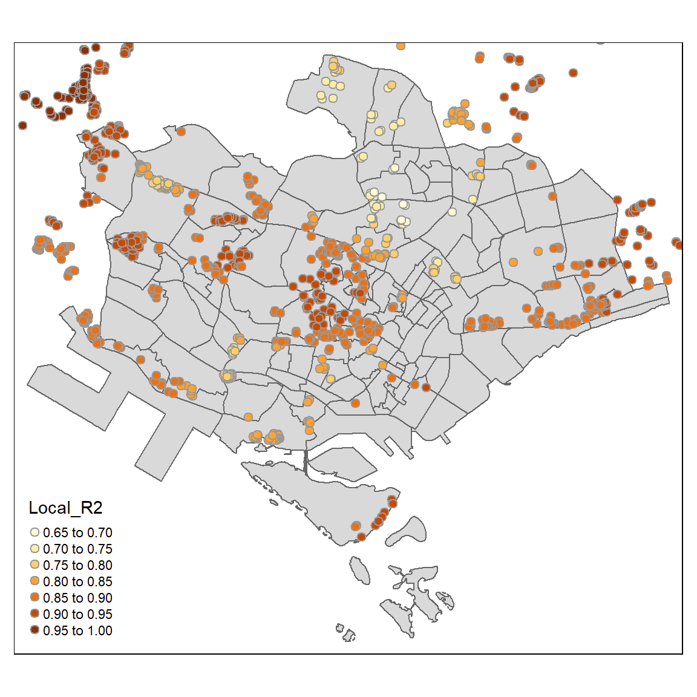

Code
pacman::p_load(olsrr, corrplot, ggpubr, sf, spdep, GWmodel, tmap, tidyverse, gtsummary)Geographically Weighted Regression (GWR) is a statistical method that considers factors that vary from place to place (like climate, demographics, or physical environment) and models how these factors relate to a specific outcome (dependent variable). This hands-on session will teach you how to create hedonic pricing models using GWR. The focus is on resale prices of condominiums in 2015, with independent variables categorized as structural and locational.
Two datasets will be used:
Before diving in, it’s crucial to install the required R packages and activate them in the R environment.
pacman::p_load(olsrr, corrplot, ggpubr, sf, spdep, GWmodel, tmap, tidyverse, gtsummary)olsrr: A package designed for tools that assist in the model building and exploratory analysis associated with ordinary least squares regression.
corrplot: A graphical display of a correlation matrix, confidence interval, or general matrix-like visualization to assist with interpretative analysis.
ggpubr: An ‘ggplot2’ extension that simplifies creating beautiful graphics for publication, offering an easy-to-use set of tools for descriptive statistics and a rich array of plots.
sf: This package provides simple and straightforward ways to handle and manipulate spatial vector data in R, integrating tightly with the ‘tidyverse’ and ‘ggplot2’.
spdep: Spatial dependence: weighting schemes, statistics, and models; a collection of functions to create spatial weights matrix objects from polygon contiguities, from point patterns by distance and tessellations, for summarizing these objects, and for permitting their use in spatial data models.
GWmodel: An R package for fitting Geographically Weighted Models, which are spatial statistical models that allow local rather than global parameters to be estimated.
tmap: An R library for creating thematic maps, which are designed to represent spatial variation of a subject using statistical data.
tidyverse: An opinionated collection of R packages designed for data science tasks that make it easy to import, tidy, transform, and visualize data.
gtsummary: This package provides an elegant and flexible way to create publication-ready analytical and summary tables using the ‘gt’ package, integrating with ‘broom’ and ‘tidyverse’ workflows.
The GWmodel package offers a set of localized spatial statistical methods. These include GW summary statistics, GW principal components analysis, GW discriminant analysis, and various forms of GW regression, some of which are robust (resistant to outliers). Typically, the results or parameters from GWmodel are visually mapped, serving as an insightful exploration tool. This often comes before or guides more traditional or advanced statistical analyses.
In this practical exercise, we’ll be using geospatial data named MP14_SUBZONE_WEB_PL. It’s in ESRI shapefile format and represents URA Master Plan 2014’s planning subzone boundaries. These geographic boundaries are depicted using polygon features, and the GIS data uses the svy21 projected coordinate system.
The code snippet below demonstrates how to import the MP14_SUBZONE_WEB_PL shapefile using the st_read() function from the sf package.
mpsz = st_read(dsn = "../data/geospatial", layer = "MP14_SUBZONE_WEB_PL")Reading layer `MP14_SUBZONE_WEB_PL' from data source
`C:\ameernoor\ISSS624\data\geospatial' using driver `ESRI Shapefile'
Simple feature collection with 323 features and 15 fields
Geometry type: MULTIPOLYGON
Dimension: XY
Bounding box: xmin: 2667.538 ymin: 15748.72 xmax: 56396.44 ymax: 50256.33
Projected CRS: SVY21The report above indicates that the R object containing the imported shapefile is named mpsz, and it’s a simple feature object with a geometry type of multipolygon. It’s important to note that the mpsz object lacks EPSG information.
The following code snippet ensures that the recently imported mpsz is updated with the correct ESPG code, which is 3414.
mpsz_svy21 <- st_transform(mpsz, 3414)Once the projection metadata is transformed, you can check the projection of the updated mpsz_svy21 using st_crs() from the sf package.
The code below will be used to check the updated mpsz_svy21.
st_crs(mpsz_svy21)Coordinate Reference System:
User input: EPSG:3414
wkt:
PROJCRS["SVY21 / Singapore TM",
BASEGEOGCRS["SVY21",
DATUM["SVY21",
ELLIPSOID["WGS 84",6378137,298.257223563,
LENGTHUNIT["metre",1]]],
PRIMEM["Greenwich",0,
ANGLEUNIT["degree",0.0174532925199433]],
ID["EPSG",4757]],
CONVERSION["Singapore Transverse Mercator",
METHOD["Transverse Mercator",
ID["EPSG",9807]],
PARAMETER["Latitude of natural origin",1.36666666666667,
ANGLEUNIT["degree",0.0174532925199433],
ID["EPSG",8801]],
PARAMETER["Longitude of natural origin",103.833333333333,
ANGLEUNIT["degree",0.0174532925199433],
ID["EPSG",8802]],
PARAMETER["Scale factor at natural origin",1,
SCALEUNIT["unity",1],
ID["EPSG",8805]],
PARAMETER["False easting",28001.642,
LENGTHUNIT["metre",1],
ID["EPSG",8806]],
PARAMETER["False northing",38744.572,
LENGTHUNIT["metre",1],
ID["EPSG",8807]]],
CS[Cartesian,2],
AXIS["northing (N)",north,
ORDER[1],
LENGTHUNIT["metre",1]],
AXIS["easting (E)",east,
ORDER[2],
LENGTHUNIT["metre",1]],
USAGE[
SCOPE["Cadastre, engineering survey, topographic mapping."],
AREA["Singapore - onshore and offshore."],
BBOX[1.13,103.59,1.47,104.07]],
ID["EPSG",3414]]Now, you’ll see that the EPSG code is listed as 3414.
Next, to see the full extent of mpsz_svy21, you can use st_bbox() from the sf package.
st_bbox(mpsz_svy21) #view extent xmin ymin xmax ymax
2667.538 15748.721 56396.440 50256.334 mpsz is transformed to CRS 3414.mpsz_svy21.mpsz_svy21.The condo_resale_2015 data comes in CSV format. The code below uses the read_csv() function from the readr package to bring condo_resale_2015 into R, and it becomes a tibble data frame named condo_resale.
condo_resale = read_csv("../data/aspatial/Condo_resale_2015.csv")After importing the data, it’s essential to check if everything is in order. The code snippets below, using glimpse(), help you understand the structure of the data.
glimpse(condo_resale)Rows: 1,436
Columns: 23
$ LATITUDE <dbl> 1.287145, 1.328698, 1.313727, 1.308563, 1.321437,…
$ LONGITUDE <dbl> 103.7802, 103.8123, 103.7971, 103.8247, 103.9505,…
$ POSTCODE <dbl> 118635, 288420, 267833, 258380, 467169, 466472, 3…
$ SELLING_PRICE <dbl> 3000000, 3880000, 3325000, 4250000, 1400000, 1320…
$ AREA_SQM <dbl> 309, 290, 248, 127, 145, 139, 218, 141, 165, 168,…
$ AGE <dbl> 30, 32, 33, 7, 28, 22, 24, 24, 27, 31, 17, 22, 6,…
$ PROX_CBD <dbl> 7.941259, 6.609797, 6.898000, 4.038861, 11.783402…
$ PROX_CHILDCARE <dbl> 0.16597932, 0.28027246, 0.42922669, 0.39473543, 0…
$ PROX_ELDERLYCARE <dbl> 2.5198118, 1.9333338, 0.5021395, 1.9910316, 1.121…
$ PROX_URA_GROWTH_AREA <dbl> 6.618741, 7.505109, 6.463887, 4.906512, 6.410632,…
$ PROX_HAWKER_MARKET <dbl> 1.76542207, 0.54507614, 0.37789301, 1.68259969, 0…
$ PROX_KINDERGARTEN <dbl> 0.05835552, 0.61592412, 0.14120309, 0.38200076, 0…
$ PROX_MRT <dbl> 0.5607188, 0.6584461, 0.3053433, 0.6910183, 0.528…
$ PROX_PARK <dbl> 1.1710446, 0.1992269, 0.2779886, 0.9832843, 0.116…
$ PROX_PRIMARY_SCH <dbl> 1.6340256, 0.9747834, 1.4715016, 1.4546324, 0.709…
$ PROX_TOP_PRIMARY_SCH <dbl> 3.3273195, 0.9747834, 1.4715016, 2.3006394, 0.709…
$ PROX_SHOPPING_MALL <dbl> 2.2102717, 2.9374279, 1.2256850, 0.3525671, 1.307…
$ PROX_SUPERMARKET <dbl> 0.9103958, 0.5900617, 0.4135583, 0.4162219, 0.581…
$ PROX_BUS_STOP <dbl> 0.10336166, 0.28673408, 0.28504777, 0.29872340, 0…
$ NO_Of_UNITS <dbl> 18, 20, 27, 30, 30, 31, 32, 32, 32, 32, 34, 34, 3…
$ FAMILY_FRIENDLY <dbl> 0, 0, 0, 0, 0, 1, 1, 0, 1, 1, 0, 0, 0, 0, 0, 0, 0…
$ FREEHOLD <dbl> 1, 1, 1, 1, 1, 1, 1, 1, 1, 0, 1, 1, 1, 1, 1, 1, 1…
$ LEASEHOLD_99YR <dbl> 0, 0, 0, 0, 0, 0, 0, 0, 0, 0, 0, 0, 0, 0, 0, 0, 0…head(condo_resale$LONGITUDE) #view data in XCOORD column[1] 103.7802 103.8123 103.7971 103.8247 103.9505 103.9386head(condo_resale$LATITUDE) #view data in YCOORD column[1] 1.287145 1.328698 1.313727 1.308563 1.321437 1.314198Next, using the base R function summary(), you can get summary statistics for the cond_resale tibble data frame.
summary(condo_resale) LATITUDE LONGITUDE POSTCODE SELLING_PRICE
Min. :1.240 Min. :103.7 Min. : 18965 Min. : 540000
1st Qu.:1.309 1st Qu.:103.8 1st Qu.:259849 1st Qu.: 1100000
Median :1.328 Median :103.8 Median :469298 Median : 1383222
Mean :1.334 Mean :103.8 Mean :440439 Mean : 1751211
3rd Qu.:1.357 3rd Qu.:103.9 3rd Qu.:589486 3rd Qu.: 1950000
Max. :1.454 Max. :104.0 Max. :828833 Max. :18000000
AREA_SQM AGE PROX_CBD PROX_CHILDCARE
Min. : 34.0 Min. : 0.00 Min. : 0.3869 Min. :0.004927
1st Qu.:103.0 1st Qu.: 5.00 1st Qu.: 5.5574 1st Qu.:0.174481
Median :121.0 Median :11.00 Median : 9.3567 Median :0.258135
Mean :136.5 Mean :12.14 Mean : 9.3254 Mean :0.326313
3rd Qu.:156.0 3rd Qu.:18.00 3rd Qu.:12.6661 3rd Qu.:0.368293
Max. :619.0 Max. :37.00 Max. :19.1804 Max. :3.465726
PROX_ELDERLYCARE PROX_URA_GROWTH_AREA PROX_HAWKER_MARKET PROX_KINDERGARTEN
Min. :0.05451 Min. :0.2145 Min. :0.05182 Min. :0.004927
1st Qu.:0.61254 1st Qu.:3.1643 1st Qu.:0.55245 1st Qu.:0.276345
Median :0.94179 Median :4.6186 Median :0.90842 Median :0.413385
Mean :1.05351 Mean :4.5981 Mean :1.27987 Mean :0.458903
3rd Qu.:1.35122 3rd Qu.:5.7550 3rd Qu.:1.68578 3rd Qu.:0.578474
Max. :3.94916 Max. :9.1554 Max. :5.37435 Max. :2.229045
PROX_MRT PROX_PARK PROX_PRIMARY_SCH PROX_TOP_PRIMARY_SCH
Min. :0.05278 Min. :0.02906 Min. :0.07711 Min. :0.07711
1st Qu.:0.34646 1st Qu.:0.26211 1st Qu.:0.44024 1st Qu.:1.34451
Median :0.57430 Median :0.39926 Median :0.63505 Median :1.88213
Mean :0.67316 Mean :0.49802 Mean :0.75471 Mean :2.27347
3rd Qu.:0.84844 3rd Qu.:0.65592 3rd Qu.:0.95104 3rd Qu.:2.90954
Max. :3.48037 Max. :2.16105 Max. :3.92899 Max. :6.74819
PROX_SHOPPING_MALL PROX_SUPERMARKET PROX_BUS_STOP NO_Of_UNITS
Min. :0.0000 Min. :0.0000 Min. :0.001595 Min. : 18.0
1st Qu.:0.5258 1st Qu.:0.3695 1st Qu.:0.098356 1st Qu.: 188.8
Median :0.9357 Median :0.5687 Median :0.151710 Median : 360.0
Mean :1.0455 Mean :0.6141 Mean :0.193974 Mean : 409.2
3rd Qu.:1.3994 3rd Qu.:0.7862 3rd Qu.:0.220466 3rd Qu.: 590.0
Max. :3.4774 Max. :2.2441 Max. :2.476639 Max. :1703.0
FAMILY_FRIENDLY FREEHOLD LEASEHOLD_99YR
Min. :0.0000 Min. :0.0000 Min. :0.0000
1st Qu.:0.0000 1st Qu.:0.0000 1st Qu.:0.0000
Median :0.0000 Median :0.0000 Median :0.0000
Mean :0.4868 Mean :0.4227 Mean :0.4882
3rd Qu.:1.0000 3rd Qu.:1.0000 3rd Qu.:1.0000
Max. :1.0000 Max. :1.0000 Max. :1.0000 Currently, condo_resale is a tibble data frame without spatial information. Let’s convert it into a sf object. The code below transforms condo_resale into a simple feature data frame using st_as_sf() from the sf package.
condo_resale.sf <- st_as_sf(condo_resale,
coords = c("LONGITUDE", "LATITUDE"),
crs=4326) %>%
st_transform(crs=3414)Note that st_transform() from the sf package is used to change the coordinates from wgs84 (i.e., crs:4326) to svy21 (i.e., crs=3414).
Next, using head(), you can check the content of condo_resale.sf.
head(condo_resale.sf)Simple feature collection with 6 features and 21 fields
Geometry type: POINT
Dimension: XY
Bounding box: xmin: 22085.12 ymin: 29951.54 xmax: 41042.56 ymax: 34546.2
Projected CRS: SVY21 / Singapore TM
# A tibble: 6 × 22
POSTCODE SELLING_PRICE AREA_SQM AGE PROX_CBD PROX_CHILDCARE PROX_ELDERLYCARE
<dbl> <dbl> <dbl> <dbl> <dbl> <dbl> <dbl>
1 118635 3000000 309 30 7.94 0.166 2.52
2 288420 3880000 290 32 6.61 0.280 1.93
3 267833 3325000 248 33 6.90 0.429 0.502
4 258380 4250000 127 7 4.04 0.395 1.99
5 467169 1400000 145 28 11.8 0.119 1.12
6 466472 1320000 139 22 10.3 0.125 0.789
# ℹ 15 more variables: PROX_URA_GROWTH_AREA <dbl>, PROX_HAWKER_MARKET <dbl>,
# PROX_KINDERGARTEN <dbl>, PROX_MRT <dbl>, PROX_PARK <dbl>,
# PROX_PRIMARY_SCH <dbl>, PROX_TOP_PRIMARY_SCH <dbl>,
# PROX_SHOPPING_MALL <dbl>, PROX_SUPERMARKET <dbl>, PROX_BUS_STOP <dbl>,
# NO_Of_UNITS <dbl>, FAMILY_FRIENDLY <dbl>, FREEHOLD <dbl>,
# LEASEHOLD_99YR <dbl>, geometry <POINT [m]>The output now represents a point feature data frame.
In this part, you’ll discover how to use visual tools from the ggplot2 package for Exploratory Data Analysis (EDA).
To understand the distribution of SELLING_PRICE, check out the code below. It generates a histogram:
ggplot(data=condo_resale.sf, aes(x=`SELLING_PRICE`)) +
geom_histogram(bins=20, color="black", fill="light blue")
The graph above shows a right-skewed distribution, indicating more condos were sold at relatively lower prices.
Statistically, we can normalize the skewed distribution by applying a log transformation. The following code creates a new variable, LOG_SELLING_PRICE, using the log transformation on SELLING_PRICE with mutate() from the dplyr package.
condo_resale.sf <- condo_resale.sf %>%
mutate(`LOG_SELLING_PRICE` = log(SELLING_PRICE))Now, you can plot LOG_SELLING_PRICE using the code below.
ggplot(data=condo_resale.sf, aes(x=`LOG_SELLING_PRICE`)) +
geom_histogram(bins=20, color="black", fill="light blue")
Notice that the distribution is less skewed after the transformation.
In this part, you’ll learn to create a set of small multiple histograms (also called trellis plots) using ggarrange() from the ggpubr package.
The code below generates 12 histograms and organizes them into a 3-column by 4-row layout using ggarrange().
AREA_SQM <- ggplot(data=condo_resale.sf, aes(x= `AREA_SQM`)) +
geom_histogram(bins=20, color="black", fill="light blue")
AGE <- ggplot(data=condo_resale.sf, aes(x= `AGE`)) +
geom_histogram(bins=20, color="black", fill="light blue")
PROX_CBD <- ggplot(data=condo_resale.sf, aes(x= `PROX_CBD`)) +
geom_histogram(bins=20, color="black", fill="light blue")
PROX_CHILDCARE <- ggplot(data=condo_resale.sf, aes(x= `PROX_CHILDCARE`)) +
geom_histogram(bins=20, color="black", fill="light blue")
PROX_ELDERLYCARE <- ggplot(data=condo_resale.sf, aes(x= `PROX_ELDERLYCARE`)) +
geom_histogram(bins=20, color="black", fill="light blue")
PROX_URA_GROWTH_AREA <- ggplot(data=condo_resale.sf,
aes(x= `PROX_URA_GROWTH_AREA`)) +
geom_histogram(bins=20, color="black", fill="light blue")
PROX_HAWKER_MARKET <- ggplot(data=condo_resale.sf, aes(x= `PROX_HAWKER_MARKET`)) +
geom_histogram(bins=20, color="black", fill="light blue")
PROX_KINDERGARTEN <- ggplot(data=condo_resale.sf, aes(x= `PROX_KINDERGARTEN`)) +
geom_histogram(bins=20, color="black", fill="light blue")
PROX_MRT <- ggplot(data=condo_resale.sf, aes(x= `PROX_MRT`)) +
geom_histogram(bins=20, color="black", fill="light blue")
PROX_PARK <- ggplot(data=condo_resale.sf, aes(x= `PROX_PARK`)) +
geom_histogram(bins=20, color="black", fill="light blue")
PROX_PRIMARY_SCH <- ggplot(data=condo_resale.sf, aes(x= `PROX_PRIMARY_SCH`)) +
geom_histogram(bins=20, color="black", fill="light blue")
PROX_TOP_PRIMARY_SCH <- ggplot(data=condo_resale.sf,
aes(x= `PROX_TOP_PRIMARY_SCH`)) +
geom_histogram(bins=20, color="black", fill="light blue")
ggarrange(AREA_SQM, AGE, PROX_CBD, PROX_CHILDCARE, PROX_ELDERLYCARE,
PROX_URA_GROWTH_AREA, PROX_HAWKER_MARKET, PROX_KINDERGARTEN, PROX_MRT,
PROX_PARK, PROX_PRIMARY_SCH, PROX_TOP_PRIMARY_SCH,
ncol = 3, nrow = 4)
Finally, let’s visualize the geographic distribution of condominium resale prices in Singapore. We’ll use the tmap package for this.
# activate interactive mode
tmap_mode("plot")
# correct the invalid geometry
fixed_geom <- sf::st_make_valid(mpsz_svy21[mpsz_svy21$REGION_N == "CENTRAL REGION", ])
# create the map
tm_shape(fixed_geom)+
tm_polygons() +
tm_shape(condo_resale.sf) +
tm_dots(col = "SELLING_PRICE",
alpha = 0.6,
style="quantile") +
tm_view(set.zoom.limits = c(11,14))Note that we’re using tm_dots() instead of tm_bubbles().
The set.zoom.limits parameter in tm_view() sets the minimum and maximum zoom level to 11 and 14, respectively.
Before moving on to the next section, switch R display back to plot mode using the code below:
tmap_mode("plot")In this part, you’ll understand how to create hedonic pricing models for resale condominiums using the lm() function in the R base.
First, we’ll make a simple linear regression model. We’ll use SELLING_PRICE as the result we want to predict and AREA_SQM as the factor we think influences it.
condo.slr <- lm(formula=SELLING_PRICE ~ AREA_SQM, data = condo_resale.sf)The lm() function gives us a result object, and we can get more details using functions like summary():
summary(condo.slr)
Call:
lm(formula = SELLING_PRICE ~ AREA_SQM, data = condo_resale.sf)
Residuals:
Min 1Q Median 3Q Max
-3695815 -391764 -87517 258900 13503875
Coefficients:
Estimate Std. Error t value Pr(>|t|)
(Intercept) -258121.1 63517.2 -4.064 5.09e-05 ***
AREA_SQM 14719.0 428.1 34.381 < 2e-16 ***
---
Signif. codes: 0 '***' 0.001 '**' 0.01 '*' 0.05 '.' 0.1 ' ' 1
Residual standard error: 942700 on 1434 degrees of freedom
Multiple R-squared: 0.4518, Adjusted R-squared: 0.4515
F-statistic: 1182 on 1 and 1434 DF, p-value: < 2.2e-16The report shows that the SELLING_PRICE can be estimated using the formula:
*y = -258121.1 + 14719x1*An R-squared value of 0.4518 indicates that our model explains about 45% of resale prices.
With a p-value much smaller than 0.0001, we reject the idea that the average is a good estimate of SELLING_PRICE. This lets us conclude that our simple linear regression model is a good estimator.
In the Coefficients: section, both Intercept and AREA_SQM have p-values smaller than 0.001, suggesting we reject the null hypothesis for B0 and B1. Thus, we can infer that B0 and B1 are good parameter estimates.
To visualize the best-fit line on a scatterplot, we can use lm() as a method function in ggplot’s geometry:
ggplot(data=condo_resale.sf,
aes(x=`AREA_SQM`, y=`SELLING_PRICE`)) +
geom_point() +
geom_smooth(method = lm)
This figure reveals some statistical outliers with relatively high selling prices.
Before creating a multiple regression model, it’s crucial to check that independent variables aren’t highly correlated. If they are, it can compromise the model quality, a phenomenon known as multicollinearity in statistics.
A correlation matrix is commonly used to visualize relationships between independent variables. The corrplot package can help with this. The code below generates a scatterplot matrix for the independent variables in the condo_resale data.frame.
corrplot(cor(condo_resale[, 5:23]), diag = FALSE, order = "AOE",
tl.pos = "td", tl.cex = 0.5, method = "number", type = "upper")
Matrix reorder is crucial for mining hidden structures and patterns. Four methods in corrplot (parameter order) are available: “AOE”, “FPC”, “hclust”, “alphabet”. In the above code, AOE order is used, ordering variables using the angular order of the eigenvectors method suggested by Michael Friendly.
The scatterplot matrix reveals that Freehold is highly correlated with LEASE_99YEAR. To avoid multicollinearity, it’s wise to include only one of them in the subsequent model. As a result, LEASE_99YEAR is excluded in the next model.
The code below uses lm() to build the multiple linear regression model.
condo.mlr <- lm(formula = SELLING_PRICE ~ AREA_SQM + AGE +
PROX_CBD + PROX_CHILDCARE + PROX_ELDERLYCARE +
PROX_URA_GROWTH_AREA + PROX_HAWKER_MARKET + PROX_KINDERGARTEN +
PROX_MRT + PROX_PARK + PROX_PRIMARY_SCH +
PROX_TOP_PRIMARY_SCH + PROX_SHOPPING_MALL + PROX_SUPERMARKET +
PROX_BUS_STOP + NO_Of_UNITS + FAMILY_FRIENDLY + FREEHOLD,
data=condo_resale.sf)
summary(condo.mlr)
Call:
lm(formula = SELLING_PRICE ~ AREA_SQM + AGE + PROX_CBD + PROX_CHILDCARE +
PROX_ELDERLYCARE + PROX_URA_GROWTH_AREA + PROX_HAWKER_MARKET +
PROX_KINDERGARTEN + PROX_MRT + PROX_PARK + PROX_PRIMARY_SCH +
PROX_TOP_PRIMARY_SCH + PROX_SHOPPING_MALL + PROX_SUPERMARKET +
PROX_BUS_STOP + NO_Of_UNITS + FAMILY_FRIENDLY + FREEHOLD,
data = condo_resale.sf)
Residuals:
Min 1Q Median 3Q Max
-3475964 -293923 -23069 241043 12260381
Coefficients:
Estimate Std. Error t value Pr(>|t|)
(Intercept) 481728.40 121441.01 3.967 7.65e-05 ***
AREA_SQM 12708.32 369.59 34.385 < 2e-16 ***
AGE -24440.82 2763.16 -8.845 < 2e-16 ***
PROX_CBD -78669.78 6768.97 -11.622 < 2e-16 ***
PROX_CHILDCARE -351617.91 109467.25 -3.212 0.00135 **
PROX_ELDERLYCARE 171029.42 42110.51 4.061 5.14e-05 ***
PROX_URA_GROWTH_AREA 38474.53 12523.57 3.072 0.00217 **
PROX_HAWKER_MARKET 23746.10 29299.76 0.810 0.41782
PROX_KINDERGARTEN 147468.99 82668.87 1.784 0.07466 .
PROX_MRT -314599.68 57947.44 -5.429 6.66e-08 ***
PROX_PARK 563280.50 66551.68 8.464 < 2e-16 ***
PROX_PRIMARY_SCH 180186.08 65237.95 2.762 0.00582 **
PROX_TOP_PRIMARY_SCH 2280.04 20410.43 0.112 0.91107
PROX_SHOPPING_MALL -206604.06 42840.60 -4.823 1.57e-06 ***
PROX_SUPERMARKET -44991.80 77082.64 -0.584 0.55953
PROX_BUS_STOP 683121.35 138353.28 4.938 8.85e-07 ***
NO_Of_UNITS -231.18 89.03 -2.597 0.00951 **
FAMILY_FRIENDLY 140340.77 47020.55 2.985 0.00289 **
FREEHOLD 359913.01 49220.22 7.312 4.38e-13 ***
---
Signif. codes: 0 '***' 0.001 '**' 0.01 '*' 0.05 '.' 0.1 ' ' 1
Residual standard error: 755800 on 1417 degrees of freedom
Multiple R-squared: 0.6518, Adjusted R-squared: 0.6474
F-statistic: 147.4 on 18 and 1417 DF, p-value: < 2.2e-16From the report, not all independent variables are statistically significant. We’ll refine the model by removing those variables that aren’t statistically significant. The code below recalibrates the model.
condo.mlr1 <- lm(formula = SELLING_PRICE ~ AREA_SQM + AGE +
PROX_CBD + PROX_CHILDCARE + PROX_ELDERLYCARE +
PROX_URA_GROWTH_AREA + PROX_MRT + PROX_PARK +
PROX_PRIMARY_SCH + PROX_SHOPPING_MALL + PROX_BUS_STOP +
NO_Of_UNITS + FAMILY_FRIENDLY + FREEHOLD,
data=condo_resale.sf)
ols_regress(condo.mlr1) Model Summary
------------------------------------------------------------------------
R 0.807 RMSE 755957.289
R-Squared 0.651 Coef. Var 43.168
Adj. R-Squared 0.647 MSE 571471422208.591
Pred R-Squared 0.638 MAE 414819.628
------------------------------------------------------------------------
RMSE: Root Mean Square Error
MSE: Mean Square Error
MAE: Mean Absolute Error
ANOVA
--------------------------------------------------------------------------------
Sum of
Squares DF Mean Square F Sig.
--------------------------------------------------------------------------------
Regression 1.512586e+15 14 1.080418e+14 189.059 0.0000
Residual 8.120609e+14 1421 571471422208.591
Total 2.324647e+15 1435
--------------------------------------------------------------------------------
Parameter Estimates
-----------------------------------------------------------------------------------------------------------------
model Beta Std. Error Std. Beta t Sig lower upper
-----------------------------------------------------------------------------------------------------------------
(Intercept) 527633.222 108183.223 4.877 0.000 315417.244 739849.200
AREA_SQM 12777.523 367.479 0.584 34.771 0.000 12056.663 13498.382
AGE -24687.739 2754.845 -0.167 -8.962 0.000 -30091.739 -19283.740
PROX_CBD -77131.323 5763.125 -0.263 -13.384 0.000 -88436.469 -65826.176
PROX_CHILDCARE -318472.751 107959.512 -0.084 -2.950 0.003 -530249.889 -106695.613
PROX_ELDERLYCARE 185575.623 39901.864 0.090 4.651 0.000 107302.737 263848.510
PROX_URA_GROWTH_AREA 39163.254 11754.829 0.060 3.332 0.001 16104.571 62221.936
PROX_MRT -294745.107 56916.367 -0.112 -5.179 0.000 -406394.234 -183095.980
PROX_PARK 570504.807 65507.029 0.150 8.709 0.000 442003.938 699005.677
PROX_PRIMARY_SCH 159856.136 60234.599 0.062 2.654 0.008 41697.849 278014.424
PROX_SHOPPING_MALL -220947.251 36561.832 -0.115 -6.043 0.000 -292668.213 -149226.288
PROX_BUS_STOP 682482.221 134513.243 0.134 5.074 0.000 418616.359 946348.082
NO_Of_UNITS -245.480 87.947 -0.053 -2.791 0.005 -418.000 -72.961
FAMILY_FRIENDLY 146307.576 46893.021 0.057 3.120 0.002 54320.593 238294.560
FREEHOLD 350599.812 48506.485 0.136 7.228 0.000 255447.802 445751.821
-----------------------------------------------------------------------------------------------------------------The gtsummary package offers an elegant way to create publication-ready summary tables in R.
In the code below, tbl_regression() creates a well-formatted regression report.
tbl_regression(condo.mlr1, intercept = TRUE)| Characteristic | Beta | 95% CI1 | p-value |
|---|---|---|---|
| (Intercept) | 527,633 | 315,417, 739,849 | <0.001 |
| AREA_SQM | 12,778 | 12,057, 13,498 | <0.001 |
| AGE | -24,688 | -30,092, -19,284 | <0.001 |
| PROX_CBD | -77,131 | -88,436, -65,826 | <0.001 |
| PROX_CHILDCARE | -318,473 | -530,250, -106,696 | 0.003 |
| PROX_ELDERLYCARE | 185,576 | 107,303, 263,849 | <0.001 |
| PROX_URA_GROWTH_AREA | 39,163 | 16,105, 62,222 | <0.001 |
| PROX_MRT | -294,745 | -406,394, -183,096 | <0.001 |
| PROX_PARK | 570,505 | 442,004, 699,006 | <0.001 |
| PROX_PRIMARY_SCH | 159,856 | 41,698, 278,014 | 0.008 |
| PROX_SHOPPING_MALL | -220,947 | -292,668, -149,226 | <0.001 |
| PROX_BUS_STOP | 682,482 | 418,616, 946,348 | <0.001 |
| NO_Of_UNITS | -245 | -418, -73 | 0.005 |
| FAMILY_FRIENDLY | 146,308 | 54,321, 238,295 | 0.002 |
| FREEHOLD | 350,600 | 255,448, 445,752 | <0.001 |
| 1 CI = Confidence Interval | |||
With gtsummary, model statistics can be included using add_glance_table() or as a table source note using add_glance_source_note(), as shown below.
tbl_regression(condo.mlr1,
intercept = TRUE) %>%
add_glance_source_note(
label = list(sigma ~ "\U03C3"),
include = c(r.squared, adj.r.squared,
AIC, statistic,
p.value, sigma))| Characteristic | Beta | 95% CI1 | p-value |
|---|---|---|---|
| (Intercept) | 527,633 | 315,417, 739,849 | <0.001 |
| AREA_SQM | 12,778 | 12,057, 13,498 | <0.001 |
| AGE | -24,688 | -30,092, -19,284 | <0.001 |
| PROX_CBD | -77,131 | -88,436, -65,826 | <0.001 |
| PROX_CHILDCARE | -318,473 | -530,250, -106,696 | 0.003 |
| PROX_ELDERLYCARE | 185,576 | 107,303, 263,849 | <0.001 |
| PROX_URA_GROWTH_AREA | 39,163 | 16,105, 62,222 | <0.001 |
| PROX_MRT | -294,745 | -406,394, -183,096 | <0.001 |
| PROX_PARK | 570,505 | 442,004, 699,006 | <0.001 |
| PROX_PRIMARY_SCH | 159,856 | 41,698, 278,014 | 0.008 |
| PROX_SHOPPING_MALL | -220,947 | -292,668, -149,226 | <0.001 |
| PROX_BUS_STOP | 682,482 | 418,616, 946,348 | <0.001 |
| NO_Of_UNITS | -245 | -418, -73 | 0.005 |
| FAMILY_FRIENDLY | 146,308 | 54,321, 238,295 | 0.002 |
| FREEHOLD | 350,600 | 255,448, 445,752 | <0.001 |
| R² = 0.651; Adjusted R² = 0.647; AIC = 42,967; Statistic = 189; p-value = <0.001; σ = 755,957 | |||
| 1 CI = Confidence Interval | |||
For more customization options, refer to Tutorial: tbl_regression
In this section, we’ll introduce a powerful R package designed for OLS regression - olsrr. It offers valuable methods for enhancing multiple linear regression models:
The code chunk below uses the ols_vif_tol() function of the olsrr package to test for signs of multicollinearity.
ols_vif_tol(condo.mlr1) Variables Tolerance VIF
1 AREA_SQM 0.8728554 1.145665
2 AGE 0.7071275 1.414172
3 PROX_CBD 0.6356147 1.573280
4 PROX_CHILDCARE 0.3066019 3.261559
5 PROX_ELDERLYCARE 0.6598479 1.515501
6 PROX_URA_GROWTH_AREA 0.7510311 1.331503
7 PROX_MRT 0.5236090 1.909822
8 PROX_PARK 0.8279261 1.207837
9 PROX_PRIMARY_SCH 0.4524628 2.210126
10 PROX_SHOPPING_MALL 0.6738795 1.483945
11 PROX_BUS_STOP 0.3514118 2.845664
12 NO_Of_UNITS 0.6901036 1.449058
13 FAMILY_FRIENDLY 0.7244157 1.380423
14 FREEHOLD 0.6931163 1.442759Since the VIF of the independent variables is less than 10, we can conclude that there are no signs of multicollinearity among the independent variables.
It’s essential to test the assumption of linearity and additivity of the relationship between dependent and independent variables in multiple linear regression.
In the code chunk below, the ols_plot_resid_fit() function of the olsrr package is used to perform a linearity assumption test.
ols_plot_resid_fit(condo.mlr1)
The figure above reveals that most data points scatter around the 0 line, suggesting that the relationships between the dependent variable and independent variables are linear.
Finally, the code chunk below uses ols_plot_resid_hist() of the olsrr package to perform a normality assumption test.
ols_plot_resid_hist(condo.mlr1)
The figure indicates that the residual of the multiple linear regression model (i.e., condo.mlr1) resembles a normal distribution.
If you prefer formal statistical tests, the ols_test_normality() of the olsrr package can be used, as shown in the code chunk below.
ols_test_normality(condo.mlr1)-----------------------------------------------
Test Statistic pvalue
-----------------------------------------------
Shapiro-Wilk 0.6856 0.0000
Kolmogorov-Smirnov 0.1366 0.0000
Cramer-von Mises 121.0768 0.0000
Anderson-Darling 67.9551 0.0000
-----------------------------------------------The summary table above shows that the p-values of the four tests are much smaller than the alpha value of 0.05. Therefore, we reject the null hypothesis, indicating there is statistical evidence that the residuals are not normally distributed.
Since our hedonic model uses geographically referenced attributes, visualizing the residuals is crucial.
To perform a spatial autocorrelation test, we’ll convert condo_resale.sf from an sf data frame into a SpatialPointsDataFrame.
First, export the residuals of the hedonic pricing model and save them as a data frame.
mlr.output <- as.data.frame(condo.mlr1$residuals)Next, join the newly created data frame with condo_resale.sf.
condo_resale.res.sf <- cbind(condo_resale.sf,
condo.mlr1$residuals) %>%
rename(`MLR_RES` = `condo.mlr1.residuals`)Now, convert condo_resale.res.sf from a simple feature object into a SpatialPointsDataFrame since the spdep package processes sp-conformed spatial data objects.
The code chunk below performs the data conversion process.
condo_resale.sp <- as_Spatial(condo_resale.res.sf)
condo_resale.spclass : SpatialPointsDataFrame
features : 1436
extent : 14940.85, 43352.45, 24765.67, 48382.81 (xmin, xmax, ymin, ymax)
crs : +proj=tmerc +lat_0=1.36666666666667 +lon_0=103.833333333333 +k=1 +x_0=28001.642 +y_0=38744.572 +ellps=WGS84 +towgs84=0,0,0,0,0,0,0 +units=m +no_defs
variables : 23
names : POSTCODE, SELLING_PRICE, AREA_SQM, AGE, PROX_CBD, PROX_CHILDCARE, PROX_ELDERLYCARE, PROX_URA_GROWTH_AREA, PROX_HAWKER_MARKET, PROX_KINDERGARTEN, PROX_MRT, PROX_PARK, PROX_PRIMARY_SCH, PROX_TOP_PRIMARY_SCH, PROX_SHOPPING_MALL, ...
min values : 18965, 540000, 34, 0, 0.386916393, 0.004927023, 0.054508623, 0.214539508, 0.051817113, 0.004927023, 0.052779424, 0.029064164, 0.077106132, 0.077106132, 0, ...
max values : 828833, 1.8e+07, 619, 37, 19.18042832, 3.46572633, 3.949157205, 9.15540001, 5.374348075, 2.229045366, 3.48037319, 2.16104919, 3.928989144, 6.748192062, 3.477433767, ... Next, use the tmap package to display the distribution of residuals on an interactive map.
The code churn below turns on the interactive mode of tmap.
tmap_mode("plot")The code chunks below create an interactive point symbol map.
tm_shape(mpsz_svy21)+
tmap_options(check.and.fix = TRUE) +
tm_polygons(alpha = 0.4) +
tm_shape(condo_resale.res.sf) +
tm_dots(col = "MLR_RES",
alpha = 0.6,
style="quantile") +
tm_view(set.zoom.limits = c(11,14))
Remember to switch back to “plot” mode before continuing.
tmap_mode("plot")The figure above reveals signs of spatial autocorrelation.
To verify our observation, the Moran’s I test will be performed.
First, compute the distance-based weight matrix using dnearneigh() function of the spdep package.
nb <- dnearneigh(coordinates(condo_resale.sp), 0, 1500, longlat = FALSE)
summary(nb)Neighbour list object:
Number of regions: 1436
Number of nonzero links: 66266
Percentage nonzero weights: 3.213526
Average number of links: 46.14624
10 disjoint connected subgraphs
Link number distribution:
1 3 5 7 9 10 11 12 13 14 15 16 17 18 19 20 21 22 23 24
3 3 9 4 3 15 10 19 17 45 19 5 14 29 19 6 35 45 18 47
25 26 27 28 29 30 31 32 33 34 35 36 37 38 39 40 41 42 43 44
16 43 22 26 21 11 9 23 22 13 16 25 21 37 16 18 8 21 4 12
45 46 47 48 49 50 51 52 53 54 55 56 57 58 59 60 61 62 63 64
8 36 18 14 14 43 11 12 8 13 12 13 4 5 6 12 11 20 29 33
65 66 67 68 69 70 71 72 73 74 75 76 77 78 79 80 81 82 83 84
15 20 10 14 15 15 11 16 12 10 8 19 12 14 9 8 4 13 11 6
85 86 87 88 89 90 91 92 93 94 95 96 97 98 99 100 101 102 103 104
4 9 4 4 4 6 2 16 9 4 5 9 3 9 4 2 1 2 1 1
105 106 107 108 109 110 112 116 125
1 5 9 2 1 3 1 1 1
3 least connected regions:
193 194 277 with 1 link
1 most connected region:
285 with 125 linksNext, use nb2listw() of the spdep package to convert the output neighbors lists (i.e., nb) into spatial weights.
nb_lw <- nb2listw(nb, style = 'W')
summary(nb_lw)Characteristics of weights list object:
Neighbour list object:
Number of regions: 1436
Number of nonzero links: 66266
Percentage nonzero weights: 3.213526
Average number of links: 46.14624
10 disjoint connected subgraphs
Link number distribution:
1 3 5 7 9 10 11 12 13 14 15 16 17 18 19 20 21 22 23 24
3 3 9 4 3 15 10 19 17 45 19 5 14 29 19 6 35 45 18 47
25 26 27 28 29 30 31 32 33 34 35 36 37 38 39 40 41 42 43 44
16 43 22 26 21 11 9 23 22 13 16 25 21 37 16 18 8 21 4 12
45 46 47 48 49 50 51 52 53 54 55 56 57 58 59 60 61 62 63 64
8 36 18 14 14 43 11 12 8 13 12 13 4 5 6 12 11 20 29 33
65 66 67 68 69 70 71 72 73 74 75 76 77 78 79 80 81 82 83 84
15 20 10 14 15 15 11 16 12 10 8 19 12 14 9 8 4 13 11 6
85 86 87 88 89 90 91 92 93 94 95 96 97 98 99 100 101 102 103 104
4 9 4 4 4 6 2 16 9 4 5 9 3 9 4 2 1 2 1 1
105 106 107 108 109 110 112 116 125
1 5 9 2 1 3 1 1 1
3 least connected regions:
193 194 277 with 1 link
1 most connected region:
285 with 125 links
Weights style: W
Weights constants summary:
n nn S0 S1 S2
W 1436 2062096 1436 94.81916 5798.341Now, use lm.morantest() of the spdep package to perform Moran’s I test for residual spatial autocor
relation.
lm.morantest(condo.mlr1, nb_lw)
Global Moran I for regression residuals
data:
model: lm(formula = SELLING_PRICE ~ AREA_SQM + AGE + PROX_CBD +
PROX_CHILDCARE + PROX_ELDERLYCARE + PROX_URA_GROWTH_AREA + PROX_MRT +
PROX_PARK + PROX_PRIMARY_SCH + PROX_SHOPPING_MALL + PROX_BUS_STOP +
NO_Of_UNITS + FAMILY_FRIENDLY + FREEHOLD, data = condo_resale.sf)
weights: nb_lw
Moran I statistic standard deviate = 24.366, p-value < 2.2e-16
alternative hypothesis: greater
sample estimates:
Observed Moran I Expectation Variance
1.438876e-01 -5.487594e-03 3.758259e-05 The Global Moran’s I test for residual spatial autocorrelation shows that its p-value is less than 0.00000000000000022, which is less than the alpha value of 0.05. Hence, we reject the null hypothesis that the residuals are randomly distributed.
Since the Observed Global Moran I = 0.1424418, which is greater than 0, we can infer that the residuals resemble a cluster distribution.
In this section, you’ll learn how to model hedonic pricing using both fixed and adaptive bandwidth schemes.
In the code chunk below, the bw.gwr() function of the GWModel package is used to determine the optimal fixed bandwidth for the model. The argument adaptive set to FALSE indicates that we want to compute the fixed bandwidth.
There are two possible approaches to determine the stopping rule: CV cross-validation and AIC corrected (AICc). The stopping rule is defined using the approach argument.
bw.fixed <- bw.gwr(formula = SELLING_PRICE ~ AREA_SQM + AGE + PROX_CBD +
PROX_CHILDCARE + PROX_ELDERLYCARE + PROX_URA_GROWTH_AREA +
PROX_MRT + PROX_PARK + PROX_PRIMARY_SCH +
PROX_SHOPPING_MALL + PROX_BUS_STOP + NO_Of_UNITS +
FAMILY_FRIENDLY + FREEHOLD,
data=condo_resale.sp,
approach="CV",
kernel="gaussian",
adaptive=FALSE,
longlat=FALSE)Fixed bandwidth: 17660.96 CV score: 8.259118e+14
Fixed bandwidth: 10917.26 CV score: 7.970454e+14
Fixed bandwidth: 6749.419 CV score: 7.273273e+14
Fixed bandwidth: 4173.553 CV score: 6.300006e+14
Fixed bandwidth: 2581.58 CV score: 5.404958e+14
Fixed bandwidth: 1597.687 CV score: 4.857515e+14
Fixed bandwidth: 989.6077 CV score: 4.722431e+14
Fixed bandwidth: 613.7939 CV score: 1.378294e+16
Fixed bandwidth: 1221.873 CV score: 4.778717e+14
Fixed bandwidth: 846.0596 CV score: 4.791629e+14
Fixed bandwidth: 1078.325 CV score: 4.751406e+14
Fixed bandwidth: 934.7772 CV score: 4.72518e+14
Fixed bandwidth: 1023.495 CV score: 4.730305e+14
Fixed bandwidth: 968.6643 CV score: 4.721317e+14
Fixed bandwidth: 955.7206 CV score: 4.722072e+14
Fixed bandwidth: 976.6639 CV score: 4.721387e+14
Fixed bandwidth: 963.7202 CV score: 4.721484e+14
Fixed bandwidth: 971.7199 CV score: 4.721293e+14
Fixed bandwidth: 973.6083 CV score: 4.721309e+14
Fixed bandwidth: 970.5527 CV score: 4.721295e+14
Fixed bandwidth: 972.4412 CV score: 4.721296e+14
Fixed bandwidth: 971.2741 CV score: 4.721292e+14
Fixed bandwidth: 970.9985 CV score: 4.721293e+14
Fixed bandwidth: 971.4443 CV score: 4.721292e+14
Fixed bandwidth: 971.5496 CV score: 4.721293e+14
Fixed bandwidth: 971.3793 CV score: 4.721292e+14
Fixed bandwidth: 971.3391 CV score: 4.721292e+14
Fixed bandwidth: 971.3143 CV score: 4.721292e+14
Fixed bandwidth: 971.3545 CV score: 4.721292e+14
Fixed bandwidth: 971.3296 CV score: 4.721292e+14
Fixed bandwidth: 971.345 CV score: 4.721292e+14
Fixed bandwidth: 971.3355 CV score: 4.721292e+14
Fixed bandwidth: 971.3413 CV score: 4.721292e+14
Fixed bandwidth: 971.3377 CV score: 4.721292e+14
Fixed bandwidth: 971.34 CV score: 4.721292e+14
Fixed bandwidth: 971.3405 CV score: 4.721292e+14
Fixed bandwidth: 971.3408 CV score: 4.721292e+14
Fixed bandwidth: 971.3403 CV score: 4.721292e+14
Fixed bandwidth: 971.3406 CV score: 4.721292e+14
Fixed bandwidth: 971.3404 CV score: 4.721292e+14
Fixed bandwidth: 971.3405 CV score: 4.721292e+14
Fixed bandwidth: 971.3405 CV score: 4.721292e+14 The result shows that the recommended bandwidth is 971.3405 meters. (Quiz: Do you know why it is in meters?)
Now we can calibrate the gwr model using the fixed bandwidth and a Gaussian kernel, as shown in the code chunk below.
gwr.fixed <- gwr.basic(formula = SELLING_PRICE ~ AREA_SQM + AGE + PROX_CBD +
PROX_CHILDCARE + PROX_ELDERLYCARE + PROX_URA_GROWTH_AREA +
PROX_MRT + PROX_PARK + PROX_PRIMARY_SCH +
PROX_SHOPPING_MALL + PROX_BUS_STOP + NO_Of_UNITS +
FAMILY_FRIENDLY + FREEHOLD,
data=condo_resale.sp,
bw=bw.fixed,
kernel = 'gaussian',
longlat = FALSE)The output is saved in a list of class “gwrm”. The code below can be used to display the model output.
gwr.fixed ***********************************************************************
* Package GWmodel *
***********************************************************************
Program starts at: 2023-12-15 11:48:17.966662
Call:
gwr.basic(formula = SELLING_PRICE ~ AREA_SQM + AGE + PROX_CBD +
PROX_CHILDCARE + PROX_ELDERLYCARE + PROX_URA_GROWTH_AREA +
PROX_MRT + PROX_PARK + PROX_PRIMARY_SCH + PROX_SHOPPING_MALL +
PROX_BUS_STOP + NO_Of_UNITS + FAMILY_FRIENDLY + FREEHOLD,
data = condo_resale.sp, bw = bw.fixed, kernel = "gaussian",
longlat = FALSE)
Dependent (y) variable: SELLING_PRICE
Independent variables: AREA_SQM AGE PROX_CBD PROX_CHILDCARE PROX_ELDERLYCARE PROX_URA_GROWTH_AREA PROX_MRT PROX_PARK PROX_PRIMARY_SCH PROX_SHOPPING_MALL PROX_BUS_STOP NO_Of_UNITS FAMILY_FRIENDLY FREEHOLD
Number of data points: 1436
***********************************************************************
* Results of Global Regression *
***********************************************************************
Call:
lm(formula = formula, data = data)
Residuals:
Min 1Q Median 3Q Max
-3470778 -298119 -23481 248917 12234210
Coefficients:
Estimate Std. Error t value Pr(>|t|)
(Intercept) 527633.22 108183.22 4.877 1.20e-06 ***
AREA_SQM 12777.52 367.48 34.771 < 2e-16 ***
AGE -24687.74 2754.84 -8.962 < 2e-16 ***
PROX_CBD -77131.32 5763.12 -13.384 < 2e-16 ***
PROX_CHILDCARE -318472.75 107959.51 -2.950 0.003231 **
PROX_ELDERLYCARE 185575.62 39901.86 4.651 3.61e-06 ***
PROX_URA_GROWTH_AREA 39163.25 11754.83 3.332 0.000885 ***
PROX_MRT -294745.11 56916.37 -5.179 2.56e-07 ***
PROX_PARK 570504.81 65507.03 8.709 < 2e-16 ***
PROX_PRIMARY_SCH 159856.14 60234.60 2.654 0.008046 **
PROX_SHOPPING_MALL -220947.25 36561.83 -6.043 1.93e-09 ***
PROX_BUS_STOP 682482.22 134513.24 5.074 4.42e-07 ***
NO_Of_UNITS -245.48 87.95 -2.791 0.005321 **
FAMILY_FRIENDLY 146307.58 46893.02 3.120 0.001845 **
FREEHOLD 350599.81 48506.48 7.228 7.98e-13 ***
---Significance stars
Signif. codes: 0 '***' 0.001 '**' 0.01 '*' 0.05 '.' 0.1 ' ' 1
Residual standard error: 756000 on 1421 degrees of freedom
Multiple R-squared: 0.6507
Adjusted R-squared: 0.6472
F-statistic: 189.1 on 14 and 1421 DF, p-value: < 2.2e-16
***Extra Diagnostic information
Residual sum of squares: 8.120609e+14
Sigma(hat): 752522.9
AIC: 42966.76
AICc: 42967.14
BIC: 41731.39
***********************************************************************
* Results of Geographically Weighted Regression *
***********************************************************************
*********************Model calibration information*********************
Kernel function: gaussian
Fixed bandwidth: 971.3405
Regression points: the same locations as observations are used.
Distance metric: Euclidean distance metric is used.
****************Summary of GWR coefficient estimates:******************
Min. 1st Qu. Median 3rd Qu.
Intercept -3.5988e+07 -5.1998e+05 7.6780e+05 1.7412e+06
AREA_SQM 1.0003e+03 5.2758e+03 7.4740e+03 1.2301e+04
AGE -1.3475e+05 -2.0813e+04 -8.6260e+03 -3.7784e+03
PROX_CBD -7.7047e+07 -2.3608e+05 -8.3600e+04 3.4646e+04
PROX_CHILDCARE -6.0097e+06 -3.3667e+05 -9.7425e+04 2.9007e+05
PROX_ELDERLYCARE -3.5000e+06 -1.5970e+05 3.1971e+04 1.9577e+05
PROX_URA_GROWTH_AREA -3.0170e+06 -8.2013e+04 7.0749e+04 2.2612e+05
PROX_MRT -3.5282e+06 -6.5836e+05 -1.8833e+05 3.6922e+04
PROX_PARK -1.2062e+06 -2.1732e+05 3.5383e+04 4.1335e+05
PROX_PRIMARY_SCH -2.2695e+07 -1.7066e+05 4.8472e+04 5.1555e+05
PROX_SHOPPING_MALL -7.2585e+06 -1.6684e+05 -1.0517e+04 1.5923e+05
PROX_BUS_STOP -1.4676e+06 -4.5207e+04 3.7601e+05 1.1664e+06
NO_Of_UNITS -1.3170e+03 -2.4822e+02 -3.0846e+01 2.5496e+02
FAMILY_FRIENDLY -2.2749e+06 -1.1140e+05 7.6214e+03 1.6107e+05
FREEHOLD -9.2067e+06 3.8073e+04 1.5169e+05 3.7528e+05
Max.
Intercept 112793548
AREA_SQM 21575
AGE 434201
PROX_CBD 2704596
PROX_CHILDCARE 1654087
PROX_ELDERLYCARE 38867814
PROX_URA_GROWTH_AREA 78515730
PROX_MRT 3124316
PROX_PARK 18122425
PROX_PRIMARY_SCH 4637503
PROX_SHOPPING_MALL 1529952
PROX_BUS_STOP 11342182
NO_Of_UNITS 12907
FAMILY_FRIENDLY 1720744
FREEHOLD 6073636
************************Diagnostic information*************************
Number of data points: 1436
Effective number of parameters (2trace(S) - trace(S'S)): 438.3804
Effective degrees of freedom (n-2trace(S) + trace(S'S)): 997.6196
AICc (GWR book, Fotheringham, et al. 2002, p. 61, eq 2.33): 42263.61
AIC (GWR book, Fotheringham, et al. 2002,GWR p. 96, eq. 4.22): 41632.36
BIC (GWR book, Fotheringham, et al. 2002,GWR p. 61, eq. 2.34): 42515.71
Residual sum of squares: 2.53407e+14
R-square value: 0.8909912
Adjusted R-square value: 0.8430417
***********************************************************************
Program stops at: 2023-12-15 11:48:18.92446 The report shows that the AICc of the gwr is 42263.61, which is significantly smaller than the global multiple linear regression model of 42967.1.
In this section, we will calibrate the gwr-based hedonic pricing model using the adaptive bandwidth approach.
Similar to the earlier section, we will first use bw.gwr() to determine the recommended data points to use.
The code chunk looks very similar to the one used to compute the fixed bandwidth, except the adaptive argument has changed to TRUE.
bw.adaptive <- bw.gwr(formula = SELLING_PRICE ~ AREA_SQM + AGE +
PROX_CBD + PROX_CHILDCARE + PROX_ELDERLYCARE +
PROX_URA_GROWTH_AREA + PROX_MRT + PROX_PARK +
PROX_PRIMARY_SCH + PROX_SHOPPING_MALL + PROX_BUS_STOP +
NO_Of_UNITS + FAMILY_FRIENDLY + FREEHOLD,
data=condo_resale.sp,
approach="CV",
kernel="gaussian",
adaptive=TRUE,
longlat=FALSE)Adaptive bandwidth: 895 CV score: 7.952401e+14
Adaptive bandwidth: 561 CV score: 7.667364e+14
Adaptive bandwidth: 354 CV score: 6.953454e+14
Adaptive bandwidth: 226 CV score: 6.15223e+14
Adaptive bandwidth: 147 CV score: 5.674373e+14
Adaptive bandwidth: 98 CV score: 5.426745e+14
Adaptive bandwidth: 68 CV score: 5.168117e+14
Adaptive bandwidth: 49 CV score: 4.859631e+14
Adaptive bandwidth: 37 CV score: 4.646518e+14
Adaptive bandwidth: 30 CV score: 4.422088e+14
Adaptive bandwidth: 25 CV score: 4.430816e+14
Adaptive bandwidth: 32 CV score: 4.505602e+14
Adaptive bandwidth: 27 CV score: 4.462172e+14
Adaptive bandwidth: 30 CV score: 4.422088e+14 The result shows that 30 is the recommended data points to be used.
Now, we can go ahead to calibrate the gwr-based hedonic pricing model using adaptive bandwidth and a Gaussian kernel, as shown in the code chunk below.
gwr.adaptive <- gwr.basic(formula = SELLING_PRICE ~ AREA_SQM + AGE +
PROX_CBD + PROX_CHILDCARE + PROX_ELDERLYCARE +
PROX_URA_GROWTH_AREA + PROX_MRT + PROX_PARK +
PROX_PRIMARY_SCH + PROX_SHOPPING_MALL + PROX_BUS_STOP +
NO_Of_UNITS + FAMILY_FRIENDLY + FREEHOLD,
data=condo_resale.sp, bw=bw.adaptive,
kernel = 'gaussian',
adaptive=TRUE,
longlat = FALSE)The code below can be used to display the model output.
gwr.adaptive ***********************************************************************
* Package GWmodel *
***********************************************************************
Program starts at: 2023-12-15 11:48:25.668018
Call:
gwr.basic(formula = SELLING_PRICE ~ AREA_SQM + AGE + PROX_CBD +
PROX_CHILDCARE + PROX_ELDERLYCARE + PROX_URA_GROWTH_AREA +
PROX_MRT + PROX_PARK + PROX_PRIMARY_SCH + PROX_SHOPPING_MALL +
PROX_BUS_STOP + NO_Of_UNITS + FAMILY_FRIENDLY + FREEHOLD,
data = condo_resale.sp, bw = bw.adaptive, kernel = "gaussian",
adaptive = TRUE, longlat = FALSE)
Dependent (y) variable: SELLING_PRICE
Independent variables: AREA_SQM AGE PROX_CBD PROX_CHILDCARE PROX_ELDERLYCARE PROX_URA_GROWTH_AREA PROX_MRT PROX_PARK PROX_PRIMARY_SCH PROX_SHOPPING_MALL PROX_BUS_STOP NO_Of_UNITS FAMILY_FRIENDLY FREEHOLD
Number of data points: 1436
***********************************************************************
* Results of Global Regression *
***********************************************************************
Call:
lm(formula = formula, data = data)
Residuals:
Min 1Q Median 3Q Max
-3470778 -298119 -23481 248917 12234210
Coefficients:
Estimate Std. Error t value Pr(>|t|)
(Intercept) 527633.22 108183.22 4.877 1.20e-06 ***
AREA_SQM 12777.52 367.48 34.771 < 2e-16 ***
AGE -24687.74 2754.84 -8.962 < 2e-16 ***
PROX_CBD -77131.32 5763.12 -13.384 < 2e-16 ***
PROX_CHILDCARE -318472.75 107959.51 -2.950 0.003231 **
PROX_ELDERLYCARE 185575.62 39901.86 4.651 3.61e-06 ***
PROX_URA_GROWTH_AREA 39163.25 11754.83 3.332 0.000885 ***
PROX_MRT -294745.11 56916.37 -5.179 2.56e-07 ***
PROX_PARK 570504.81 65507.03 8.709 < 2e-16 ***
PROX_PRIMARY_SCH 159856.14 60234.60 2.654 0.008046 **
PROX_SHOPPING_MALL -220947.25 36561.83 -6.043 1.93e-09 ***
PROX_BUS_STOP 682482.22 134513.24 5.074 4.42e-07 ***
NO_Of_UNITS -245.48 87.95 -2.791 0.005321 **
FAMILY_FRIENDLY 146307.58 46893.02 3.120 0.001845 **
FREEHOLD 350599.81 48506.48 7.228 7.98e-13 ***
---Significance stars
Signif. codes: 0 '***' 0.001 '**' 0.01 '*' 0.05 '.' 0.1 ' ' 1
Residual standard error: 756000 on 1421 degrees of freedom
Multiple R-squared: 0.6507
Adjusted R-squared: 0.6472
F-statistic: 189.1 on 14 and 1421 DF, p-value: < 2.2e-16
***Extra Diagnostic information
Residual sum of squares: 8.120609e+14
Sigma(hat): 752522.9
AIC: 42966.76
AICc: 42967.14
BIC: 41731.39
***********************************************************************
* Results of Geographically Weighted Regression *
***********************************************************************
*********************Model calibration information*********************
Kernel function: gaussian
Adaptive bandwidth: 30 (number of nearest neighbours)
Regression points: the same locations as observations are used.
Distance metric: Euclidean distance metric is used.
****************Summary of GWR coefficient estimates:******************
Min. 1st Qu. Median 3rd Qu.
Intercept -1.3487e+08 -2.4669e+05 7.7928e+05 1.6194e+06
AREA_SQM 3.3188e+03 5.6285e+03 7.7825e+03 1.2738e+04
AGE -9.6746e+04 -2.9288e+04 -1.4043e+04 -5.6119e+03
PROX_CBD -2.5330e+06 -1.6256e+05 -7.7242e+04 2.6624e+03
PROX_CHILDCARE -1.2790e+06 -2.0175e+05 8.7158e+03 3.7778e+05
PROX_ELDERLYCARE -1.6212e+06 -9.2050e+04 6.1029e+04 2.8184e+05
PROX_URA_GROWTH_AREA -7.2686e+06 -3.0350e+04 4.5869e+04 2.4613e+05
PROX_MRT -4.3781e+07 -6.7282e+05 -2.2115e+05 -7.4593e+04
PROX_PARK -2.9020e+06 -1.6782e+05 1.1601e+05 4.6572e+05
PROX_PRIMARY_SCH -8.6418e+05 -1.6627e+05 -7.7853e+03 4.3222e+05
PROX_SHOPPING_MALL -1.8272e+06 -1.3175e+05 -1.4049e+04 1.3799e+05
PROX_BUS_STOP -2.0579e+06 -7.1461e+04 4.1104e+05 1.2071e+06
NO_Of_UNITS -2.1993e+03 -2.3685e+02 -3.4699e+01 1.1657e+02
FAMILY_FRIENDLY -5.9879e+05 -5.0927e+04 2.6173e+04 2.2481e+05
FREEHOLD -1.6340e+05 4.0765e+04 1.9023e+05 3.7960e+05
Max.
Intercept 18758355
AREA_SQM 23064
AGE 13303
PROX_CBD 11346650
PROX_CHILDCARE 2892127
PROX_ELDERLYCARE 2465671
PROX_URA_GROWTH_AREA 7384059
PROX_MRT 1186242
PROX_PARK 2588497
PROX_PRIMARY_SCH 3381462
PROX_SHOPPING_MALL 38038564
PROX_BUS_STOP 12081592
NO_Of_UNITS 1010
FAMILY_FRIENDLY 2072414
FREEHOLD 1813995
************************Diagnostic information*************************
Number of data points: 1436
Effective number of parameters (2trace(S) - trace(S'S)): 350.3088
Effective degrees of freedom (n-2trace(S) + trace(S'S)): 1085.691
AICc (GWR book, Fotheringham, et al. 2002, p. 61, eq 2.33): 41982.22
AIC (GWR book, Fotheringham, et al. 2002,GWR p. 96, eq. 4.22): 41546.74
BIC (GWR book, Fotheringham, et al. 2002,GWR p. 61, eq. 2.34): 41914.08
Residual sum of squares: 2.528227e+14
R-square value: 0.8912425
Adjusted R-square value: 0.8561185
***********************************************************************
Program stops at: 2023-12-15 11:48:26.95336 The report shows that the AICc of the adaptive distance gwr is 41982.22, which is even smaller than the AICc of the fixed distance gwr of 42263.61.
In addition to regression residuals, the output feature class table includes fields for observed and predicted y values, condition number (cond), Local R2, residuals, and explanatory variable coefficients and standard errors:
the presence of strong local collinearity, results become unstable. Results associated with condition numbers larger than 30 may be unreliable. - Local R2: these values range between 0.0 and 1.0 and indicate how well the local regression model fits observed y values. Very low values indicate the local model is performing poorly. Mapping the Local R2 values to see where GWR predicts well and where it predicts poorly may provide clues about important variables that may be missing from the regression model. - Predicted: these are the estimated (or fitted) y values computed by GWR. - Residuals: to obtain the residual values, the fitted y values are subtracted from the observed y values. Standardized residuals have a mean of zero and a standard deviation of 1. A cold-to-hot rendered map of standardized residuals can be produced by using these values. - Coefficient Standard Error: these values measure the reliability of each coefficient estimate. Confidence in those estimates is higher when standard errors are small in relation to the actual coefficient values. Large standard errors may indicate problems with local collinearity.
They are all stored in a SpatialPointsDataFrame or SpatialPolygonsDataFrame object integrated with fit.points, GWR coefficient estimates, y value, predicted values, coefficient standard errors, and t-values in its “data” slot in an object called SDF of the output list.
To visualize the fields in SDF, we need to first convert it into an sf data.frame using the code chunk below.
condo_resale.sf.adaptive <- st_as_sf(gwr.adaptive$SDF) %>%
st_transform(crs=3414)condo_resale.sf.adaptive.svy21 <- st_transform(condo_resale.sf.adaptive, 3414)
condo_resale.sf.adaptive.svy21 gwr.adaptive.output <- as.data.frame(gwr.adaptive$SDF)
condo_resale.sf.adaptive <- cbind(condo_resale.res.sf, as.matrix(gwr.adaptive.output))Next, glimpse() is used to display the content of condo_resale.sf.adaptive sf data frame.
glimpse(condo_resale.sf.adaptive)Rows: 1,436
Columns: 52
$ Intercept <dbl> 2050011.67, 1633128.24, 3433608.17, 234358.91,…
$ AREA_SQM <dbl> 9561.892, 16576.853, 13091.861, 20730.601, 672…
$ AGE <dbl> -9514.634, -58185.479, -26707.386, -93308.988,…
$ PROX_CBD <dbl> -120681.94, -149434.22, -259397.77, 2426853.66…
$ PROX_CHILDCARE <dbl> 319266.925, 441102.177, -120116.816, 480825.28…
$ PROX_ELDERLYCARE <dbl> -393417.795, 325188.741, 535855.806, 314783.72…
$ PROX_URA_GROWTH_AREA <dbl> -159980.203, -142290.389, -253621.206, -267929…
$ PROX_MRT <dbl> -299742.96, -2510522.23, -936853.28, -2039479.…
$ PROX_PARK <dbl> -172104.47, 523379.72, 209099.85, -759153.26, …
$ PROX_PRIMARY_SCH <dbl> 242668.03, 1106830.66, 571462.33, 3127477.21, …
$ PROX_SHOPPING_MALL <dbl> 300881.390, -87693.378, -126732.712, -29593.34…
$ PROX_BUS_STOP <dbl> 1210615.44, 1843587.22, 1411924.90, 7225577.51…
$ NO_Of_UNITS <dbl> 104.8290640, -288.3441183, -9.5532945, -161.35…
$ FAMILY_FRIENDLY <dbl> -9075.370, 310074.664, 5949.746, 1556178.531, …
$ FREEHOLD <dbl> 303955.61, 396221.27, 168821.75, 1212515.58, 3…
$ y <dbl> 3000000, 3880000, 3325000, 4250000, 1400000, 1…
$ yhat <dbl> 2886531.8, 3466801.5, 3616527.2, 5435481.6, 13…
$ residual <dbl> 113468.16, 413198.52, -291527.20, -1185481.63,…
$ CV_Score <dbl> 0, 0, 0, 0, 0, 0, 0, 0, 0, 0, 0, 0, 0, 0, 0, 0…
$ Stud_residual <dbl> 0.38207013, 1.01433140, -0.83780678, -2.846146…
$ Intercept_SE <dbl> 516105.5, 488083.5, 963711.4, 444185.5, 211962…
$ AREA_SQM_SE <dbl> 823.2860, 825.2380, 988.2240, 617.4007, 1376.2…
$ AGE_SE <dbl> 5889.782, 6226.916, 6510.236, 6010.511, 8180.3…
$ PROX_CBD_SE <dbl> 37411.22, 23615.06, 56103.77, 469337.41, 41064…
$ PROX_CHILDCARE_SE <dbl> 319111.1, 299705.3, 349128.5, 304965.2, 698720…
$ PROX_ELDERLYCARE_SE <dbl> 120633.34, 84546.69, 129687.07, 127150.69, 327…
$ PROX_URA_GROWTH_AREA_SE <dbl> 56207.39, 76956.50, 95774.60, 470762.12, 47433…
$ PROX_MRT_SE <dbl> 185181.3, 281133.9, 275483.7, 279877.1, 363830…
$ PROX_PARK_SE <dbl> 205499.6, 229358.7, 314124.3, 227249.4, 364580…
$ PROX_PRIMARY_SCH_SE <dbl> 152400.7, 165150.7, 196662.6, 240878.9, 249087…
$ PROX_SHOPPING_MALL_SE <dbl> 109268.8, 98906.8, 119913.3, 177104.1, 301032.…
$ PROX_BUS_STOP_SE <dbl> 600668.6, 410222.1, 464156.7, 562810.8, 740922…
$ NO_Of_UNITS_SE <dbl> 218.1258, 208.9410, 210.9828, 361.7767, 299.50…
$ FAMILY_FRIENDLY_SE <dbl> 131474.73, 114989.07, 146607.22, 108726.62, 16…
$ FREEHOLD_SE <dbl> 115954.0, 130110.0, 141031.5, 138239.1, 210641…
$ Intercept_TV <dbl> 3.9720784, 3.3460017, 3.5629010, 0.5276150, 1.…
$ AREA_SQM_TV <dbl> 11.614302, 20.087361, 13.247868, 33.577223, 4.…
$ AGE_TV <dbl> -1.6154474, -9.3441881, -4.1023685, -15.524301…
$ PROX_CBD_TV <dbl> -3.22582173, -6.32792021, -4.62353528, 5.17080…
$ PROX_CHILDCARE_TV <dbl> 1.000488185, 1.471786337, -0.344047555, 1.5766…
$ PROX_ELDERLYCARE_TV <dbl> -3.26126929, 3.84626245, 4.13191383, 2.4756745…
$ PROX_URA_GROWTH_AREA_TV <dbl> -2.846248368, -1.848971738, -2.648105057, -5.6…
$ PROX_MRT_TV <dbl> -1.61864578, -8.92998600, -3.40075727, -7.2870…
$ PROX_PARK_TV <dbl> -0.83749312, 2.28192684, 0.66565951, -3.340617…
$ PROX_PRIMARY_SCH_TV <dbl> 1.59230221, 6.70194543, 2.90580089, 12.9836104…
$ PROX_SHOPPING_MALL_TV <dbl> 2.753588422, -0.886626400, -1.056869486, -0.16…
$ PROX_BUS_STOP_TV <dbl> 2.0154464, 4.4941192, 3.0419145, 12.8383775, 0…
$ NO_Of_UNITS_TV <dbl> 0.480589953, -1.380026395, -0.045279967, -0.44…
$ FAMILY_FRIENDLY_TV <dbl> -0.06902748, 2.69655779, 0.04058290, 14.312764…
$ FREEHOLD_TV <dbl> 2.6213469, 3.0452799, 1.1970499, 8.7711485, 1.…
$ Local_R2 <dbl> 0.8846744, 0.8899773, 0.8947007, 0.9073605, 0.…
$ geometry <POINT [m]> POINT (22085.12 29951.54), POINT (25656.…summary(gwr.adaptive$SDF$yhat) Min. 1st Qu. Median Mean 3rd Qu. Max.
171347 1102001 1385528 1751842 1982307 13887901 The code chunks below are used to create an interactive point symbol map.
tmap_mode("plot")
tm_shape(mpsz_svy21)+
tm_polygons(alpha = 0.1) +
tm_shape(condo_resale.sf.adaptive) +
tm_dots(col = "Local_R2",
border.col = "gray60",
border.lwd = 1) +
tm_view(set.zoom.limits = c(11,14))
tmap_mode("plot")The code chunks below are used to create an interactive point symbol map.
tmap_mode("plot")
AREA_SQM_SE <- tm_shape(mpsz_svy21)+
tm_polygons(alpha = 0.1) +
tm_shape(condo_resale.sf.adaptive) +
tm_dots(col = "AREA_SQM_SE",
border.col = "gray60",
border.lwd = 1) +
tm_view(set.zoom.limits = c(11,14))
AREA_SQM_TV <- tm_shape(mpsz_svy21)+
tm_polygons(alpha = 0.1) +
tm_shape(condo_resale.sf.adaptive) +
tm_dots(col = "AREA_SQM_TV",
border.col = "gray60",
border.lwd = 1) +
tm_view(set.zoom.limits = c(11,14))
tmap_arrange(AREA_SQM_SE, AREA_SQM_TV,
asp=1, ncol=2,
sync = TRUE)
tmap_mode("plot")# correct the invalid geometry
fixed_geom <- sf::st_make_valid(mpsz_svy21[mpsz_svy21$REGION_N == "CENTRAL REGION", ])
tm_shape(fixed_geom[fixed_geom$REGION_N=="CENTRAL REGION", ])+
tm_polygons()+
tm_shape(condo_resale.sf.adaptive) +
tm_bubbles(col = "Local_R2",
size = 0.15,
border.col = "gray60",
border.lwd = 1)
Gollini I, Lu B, Charlton M, Brunsdon C, Harris P (2015) “GWmodel: an R Package for exploring Spatial Heterogeneity using Geographically Weighted Models”. Journal of Statistical Software, 63(17):1-50, http://www.jstatsoft.org/v63/i17/
Lu B, Harris P, Charlton M, Brunsdon C (2014) “The GWmodel R Package: further topics for exploring Spatial Heterogeneity using Geographically Weighted Models”. Geo-spatial Information Science 17(2): 85-101, http://www.tandfonline.com/doi/abs/10.1080/1009502.2014.917453